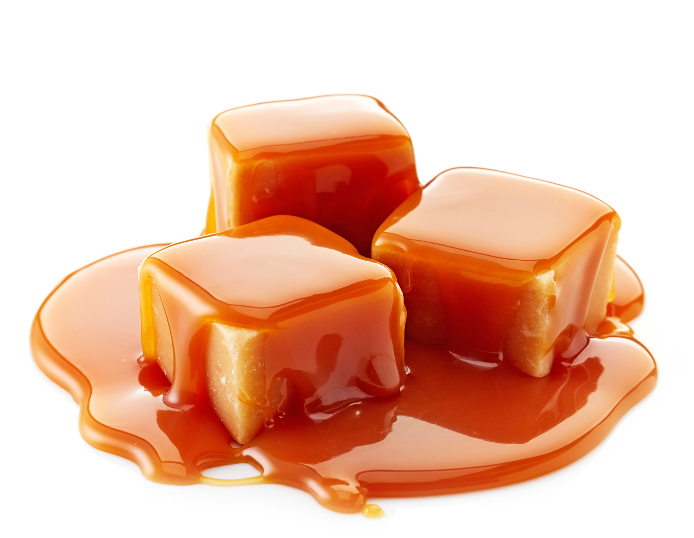

Samoan Fa'ausi

What is it..?
Description of fa'ausi
Ingredients
- 1 cup caster sugar
- 1 1/2 cups coconut milk
Fa'apapa (coconut bread)
- 2 1/4 cups plain flour
- 1/2 cup caster sugar
- 3/4 cup moist coconut flakes (plus extra, to serve)
- 1 tsp baking powder
- 1 cup coconut milk
Directions
- Preheat oven to 200 degrees C or 400 degress F
- Mix flour, sugar, coconut flakes, and baking powder in a bowl. Pour in coconut milk and stir to make a sticky dough.
- Transfer dough to a floured work surface and split in half. Shape both of the pieces into 4 cm (1 1/2 in) thick rectangles.
- Place rectangles in the center of 2 large sheets of baking paper on a baking tray. Make sure baking sheets are greased. Fold the paper into a parcel to completely enclose the dough.
- Bake for about 35 minutes or until golden brown.
- Once baked, set aside to cool. Cut each of the halves into 4 cm (1 1/2 in) squares.
- Prepare the coconut caramel by combining sugar and 60 mL (4 tbsp) water in a small saucepan. Heat over medium heat stirring constantly until the sugar dissolves completely.
- Bring the mixture to a boil and cook until it turns a deep golden brown. Do not stir during this time. It should take about 6 minutes.
- Once done, remove the pan from heat and slowly pour in the coconut milk. Place it back on medium heat and stir until the mixture is smooth and ingredients are combine. Remove from heat and set aside to cool.
- Place the Fa'apapa on a large serving tray or shallow serving bowl and pour the caramel over the top. Allow the caramel sauce to soak into the bread and add extra coconut flakes on top to serve. Enjoy!